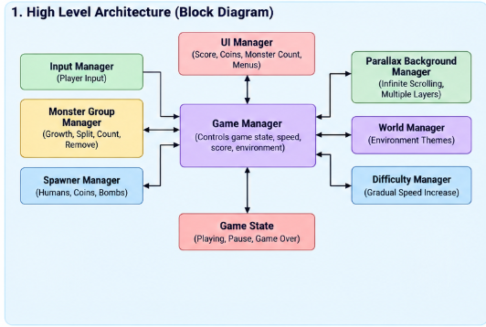
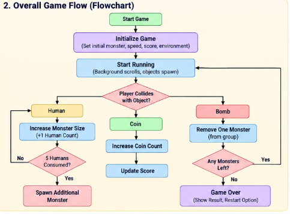
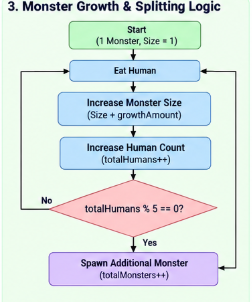
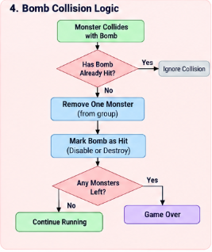
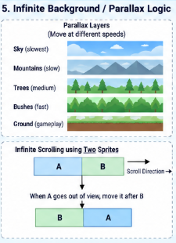
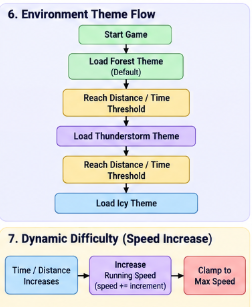

Monster Merge Rush · Project walkthrough
Game flow diagrams
Explore the system architecture and gameplay flows one at a time, or scroll through all six supplied diagrams in sequence.
← Back to Monster Merge Rush project details01 · SYSTEM DESIGN
High-level architecture

02 · GAMEPLAY
Overall game flow

03 · PROGRESSION
Monster growth and group expansion

04 · COLLISION LOGIC
Bomb collision and damage

05 · ENVIRONMENT SCROLLING
Infinite background and parallax

06 · WORLD & CHALLENGE
Environment themes and dynamic difficulty

Note: These are the supplied project diagrams. They describe the represented design and flow; confirm implementation details against the current Unity build.